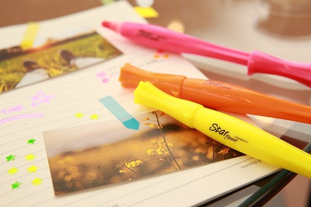
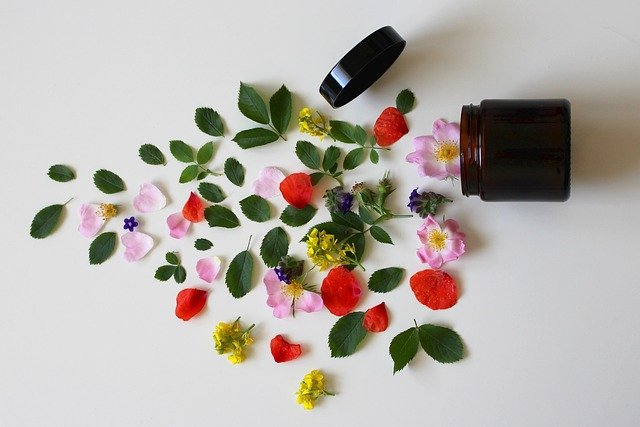

-
 브이로그 | 학생 일상 | 차분한 감성 깔끔한 영상 | 커피 한 잔 | 여유 | VLOG in my own space 띵's life 65K views
브이로그 | 학생 일상 | 차분한 감성 깔끔한 영상 | 커피 한 잔 | 여유 | VLOG in my own space 띵's life 65K views -
브이로그 | 학생 일상 | 발랄한 감성 깔끔한 영상 | 플래너 | 계획 | VLOG in my own space 띵's life 87K views
-
브이로그 | 학생 일상 | 활기찬 감성 깔끔한 영상 | flower | 데코 | VLOG in my own space 띵's life 79K views